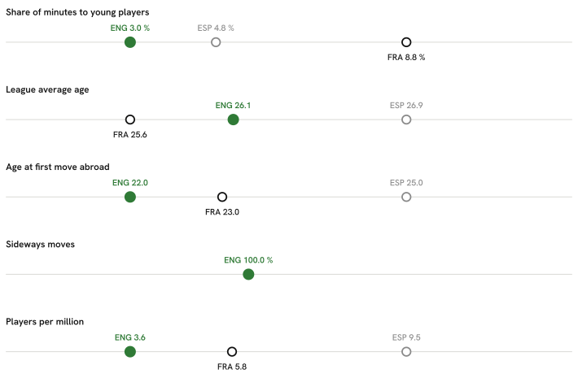

Summary · Question 1 of 14
Five pathway measures: England, France and Spain, 2025/26
Five measures, from youth minutes at home to players in Europe’s top-ranked leagues, for English football and the two comparison countries used throughout the atlas. Each links to the page with the full evidence. The order follows a player’s path; it is not a causal chain.

-
Playing time for under-21 nationals in the country’s own top league.
Share of league minutes that went to players aged 21 or under
ENG 3.0 % FRA 8.8 % ESP 4.8 %Clubs that gave those young players more than a tenth of their own playing time
ENG 10 of 20 clubs FRA 14 of 18 clubs ESP 7 of 20 clubsUnder-21 nationals who were regular starters, per club in the league
ENG 0.50 per club (10 players) FRA 1.28 per club (23 players) ESP 0.70 per club (14 players)The regular-starter line is drawn at ten starts; at five it is 0.8 per club, at fifteen 0.4 (ten: 0.5).
2.9 % of the league’s starts went to them against 3.0 % of its minutes, so they start about as often as they play at all; in a start they played a median 72 minutes against the league’s 82.
-
The age profile of the home league.
Average age of a minute played in the league
ENG 26.1 FRA 25.6 ESP 26.9Share of league minutes that went to players aged 30 or over
ENG 16.7 % FRA 20.2 % ESP 28.9 % -
Age at the first season with real playing time in a foreign league.
Median age at the first season with real playing time in a foreign league, over the players abroad today
ENG 22 years (49 players) FRA 23 years (205 players) ESP 25 years (132 players) -
Moves abroad to a league no stronger than the home league.
Share of players abroad in a league no stronger than their own (UEFA-coefficient multiplier)
ENG 100 % FRA — ESP — -
Players in Europe’s top-ranked leagues per million people.
Players in Europe's top-ranked leagues, for every million people
ENG 3.60 FRA 5.79 ESP 9.54The change-point model’s most probable season for a fall in the count of English players in the Big-5 is 2007/08 (posterior 11 %), a level change of ×0.95 (90 % HDI 0.77–1.17). The 90 % interval for the fall includes ×1.00, so the fall is not distinguishable from no change at that level. Break & forecast.
In the gap decomposition (descriptive, see its page), the channel with the largest contribution is how strong the domestic league is for France and how old players are when they move abroad for Spain. It describes associations across 8 countries and does not say what would change the gap.
Explore the data
Five pathway measures
Five pathway measures
Four exhibits comparing England with 7 peer countries: youth exposure at home, export route, how exports fare, and who made it.
Exhibit A — youth exposure at home
Share of a domestic league's total minutes played by its own nationals aged 21 or under, 2025/26.
* Σ minutes of players with the league country's nationality and age ≤ 21 at the season's start ÷ Σ minutes of all players in the league, 2025/26. Under-23 shares: NED 24.2 %, FRA 14.4 %, BEL 16.4 %, GER 10.9 %, POR 9.1 %, ESP 16.9 %, ENG 6.4 %, ITA 7.3 %. A league without a bar is not covered by FBref.
Exhibit B — export route
For every peer-country player on a 2026/27 top-9 roster: the age at the first top-9 season (full roster, and recent entrants only) and, for recent entrants, the league of the season before it. Not informative for this nation: Premier League and every peer's own league are themselves top-9 leagues, so the domestic / top-9 split has no content here; the exhibit is kept for comparability with other nations. English exports: 154 players, median export age 21 (recent entrants 29, median 20), 0 % of the recent ones straight from the Premier League*.
| Country | n | Recent | Age at first top-9 season (all) | Age at first top-9 season (recent) | Domestic | Stepping stone | Other top-9 | Not covered | Censored |
|---|---|---|---|---|---|---|---|---|---|
| ENG England | 154 | 29 | 21 | 20 | 0 % | 0 % | 0 % | 100 % | 39 % |
| FRA France | 313 | 107 | 21 | 21 | 0 % | 2 % | 0 % | 98 % | 34 % |
| GER Germany | 208 | 63 | 22.5 | 22 | 0 % | 57 % | 0 % | 43 % | 36 % |
| ESP Spain | 368 | 98 | 22 | 21.5 | 0 % | 0 % | 0 % | 100 % | 33 % |
| ITA Italy | 144 | 36 | 21 | 22 | 0 % | 0 % | 0 % | 100 % | 32 % |
| NED Netherlands | 268 | 78 | 20 | 20.5 | 0 % | 3 % | 0 % | 97 % | 29 % |
| POR Portugal | 176 | 40 | 20.5 | 20.5 | 0 % | 5 % | 0 % | 95 % | 36 % |
| BEL Belgium | 208 | 55 | 20 | 20 | 0 % | 0 % | 0 % | 100 % | 32 % |
* Export age = age at the first season in any headline league, history back to 2020/21; a first appearance already in 2020/21 is censored. Recent entrants: first top-9 season 2025/26 or 2026/27, the only ones whose previous season lies inside the fetched window (2024/25 onwards for peer domestic leagues). Stepping-stone league: GER-2. Bundesliga, the one covered league below the top nine that is no peer’s home league. Not covered: no earlier row in the data.
Exhibit C — how the exports fare
Peer-country players at a top-9 club in 2025/26: median share of the club's minutes, and the club's strength within its league.
Median share of the club’s minutes
Median club goals-scored percentile within its league (club-strength proxy)
* Minutes share = player minutes ÷ (club matches × 90), 2025/26, one row per player-season. Club strength proxy: goals-scored percentile within league — clubs ranked by the goals their own roster scored that season (ClubElo was unreachable at run time). Both are medians over the country's exports; n per country in the bars.
Exhibit D — profile of those who made it
Goals + assists per 90, league-adjusted, in 2025/26 by the tier of the player's own league: domestic, stepping stone, top-9, or another covered league. English count and median against the median of the peer countries' values. Not informative for this nation: Premier League and every peer's own league are themselves top-9 leagues, so the domestic / top-9 split has no content here; the exhibit is kept for comparability with other nations.
Profile table by tier and position group
| Tier | Group | ENG n | ENG median | Peer median n | Peer median |
|---|---|---|---|---|---|
| stepping-stone league | FW | 0 | — | 2 | 0.22 |
| stepping-stone league | MF | 0 | — | 3 | 0.09 |
| stepping-stone league | DF | 0 | — | 1 | 0.03 |
| top-9 league | FW | 19 | 0.32 | 26 | 0.28 |
| top-9 league | MF | 64 | 0.21 | 84 | 0.14 |
| top-9 league | DF | 51 | 0.08 | 64 | 0.05 |
| other covered league | FW | 5 | 0.12 | 6 | 0.14 |
| other covered league | MF | 1 | 0.13 | 7 | 0.08 |
| other covered league | DF | 4 | 0.02 | 11 | 0.03 |
* Tier = the league of the player's own 2025/26 season. Peer median n and peer median are medians across the peer countries present in that tier and group; a tier a country has no player in is absent, not zero.
Exhibit E — where English exports go
Of the 144 mapped English players, 48 play outside the Premier League.
- top-9
Christian Burgess · Lloyd Kelly · Ross Sykes - other
Luis Binks · Luke Plange · Nathan Butler-Oyedeji
* Buckets by the league of the player's own 2025/26 season; a player is counted once per position group, like everywhere else on the page, so one with rows in two groups counts in each; the number in front of each bar is the player count, the median multiplier is the bucket's median league multiplier. Sideways: destination league multiplier <= the domestic league's multiplier.
F · The 2026 FIFA World Cup squad by league tier
Where the 26 players named to the 2026 FIFA World Cup squad played in 2025/26, next to Germany, France, Spain, Netherlands, Belgium, Portugal. Tier = the league of the player's most-minutes 2025/26 row.
Minutes, multipliers and age cohorts by country
| Country | Median minutes | Median multiplier | U22 | 23–25 | 26–29 | 30+ |
|---|---|---|---|---|---|---|
| ENG England | 2199 | 1.000 | 2 | 8 | 9 | 7 |
| GER Germany | 2208.5 | 0.788 | 2 | 8 | 4 | 12 |
| FRA France | 2316 | 0.807 | 3 | 7 | 10 | 6 |
| ESP Spain | 2181 | 0.807 | 3 | 8 | 7 | 8 |
| NED Netherlands | 1903 | 1.000 | 1 | 7 | 11 | 7 |
| BEL Belgium | 2034 | 0.807 | 4 | 8 | 5 | 9 |
| POR Portugal | 2226 | 0.807 | 1 | 6 | 11 | 8 |
* 8 of the 182 squad players across the 7 countries have no 2025/26 row in the fetched leagues and are counted as unmatched (ENG 1, GER 0, FRA 1, ESP 1, NED 1, BEL 1, POR 3).